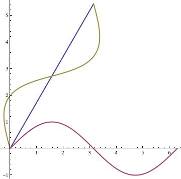
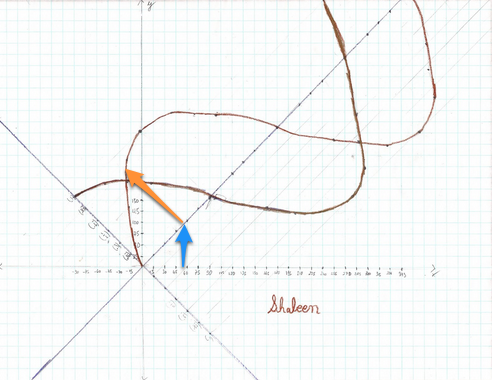
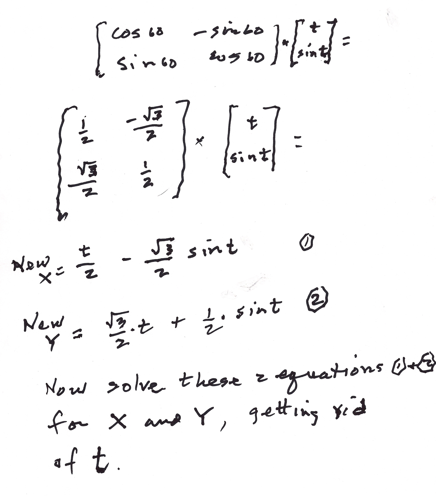
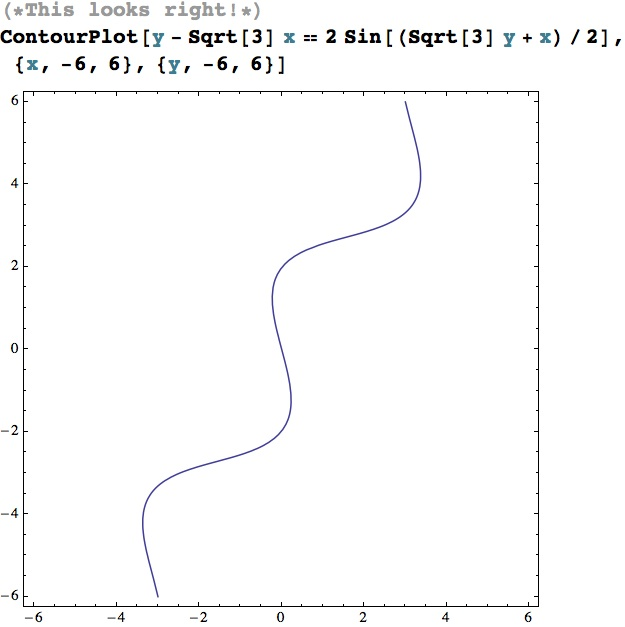
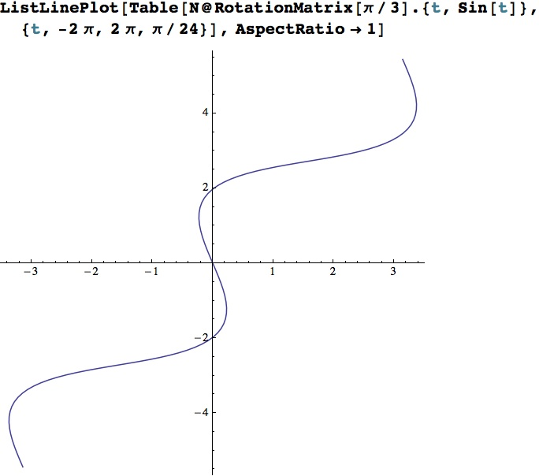
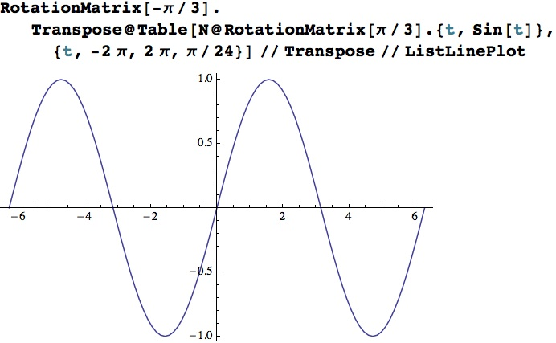
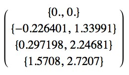

Can we rotate a sine wave 60 degrees counterclockwise?
by Don Cohen, Shaleen Agrawal (age 14), & Lori Johnson Morse
It all started when Don asked Shaleen, to work with sine waves. He
graphed the sine wave using the unit circle, then Don asked Shaleen to change
the amplitude, to double the # of waves in 360o and finally to shift the sine
wave 60o to the left , then write the equation for each below.

Then Shaleen asked Don if we could rotate the sine wave 60o ccw!
A geat question! Don tried copying the sine wave on tracing paper, then with a protractor,
rotated the sine wave 60o ccw. He had the answer, but no points or equation.
Shaleen on the other hand did the rotation by hand as we’ll see later.
Don had never done this, but had rotated parabolas and ellipses in the Japanese
version of his book Changing Shapes With Matrices. He figured he could do this.
He called Wolfram support for help in how to write the matrix product. The
problem, as pointed out by a physics teacher and parent of one of Don’s
students, was that {x, sin[x]} was not a function (after rotating it π/3), so we
had to use a parametric plot. With Wolfram support, Don was able to come up with
the graph for the rotated sine wave.
v = {t, Sin[t]} the sine wave matrix to be rotated
r = {t, 0} the x- axis to be rotated
w = {{Cos[π/3], -Sin[π/3]}, {Sin[π/3], Cos[π/3]}} the 60 degree rotation ccw
matrix
ParametricPlot[{{w.r}, {v}, {w.v}}, {t, 0, 2π}, AspectRatio -> Automatic,
PlotStyle -> {Thick}] rotates the sine wave and axes, with the parametric plot,
makes the scale on the axes the same, and plots it thicker than normal.
The result was the graph below.

When Lori Johnson Morse (www.mathheadinc.com), arrived from Kansas City, MO with
her husband Joe, Don asked Shaleen to show her how he rotated the sine wave by
hand and this is how she understood it: Shaleen first rotated the x-axis 60
degrees or what he thought was 60 degrees. Lori noticed that the rotated x-axis
had a slope of 1/1 so the axis and the sine graph was actually rotated 45
degrees.

This ‘mistake’ wasn’t a problem because Shaleen’s method would work for any
angle up to 90 degrees. He was probably so full of excitement that he just
didn’t notice, which is fine! At any rate, after rotating the x-axis, Shaleen,
translated the x-values vertically to the rotated x-axis (see the blue arrow).
Then, using the y-values from the original sine (and cosine) curve, plotted
those the same vertical distance but perpendicular to the rotated x-axis (see
the orange arrow), at each of the corresponding, rotated x-coordinates.
Now this is great work because Shaleen did not use any of the usual techniques
(rotation matrices, for example) for rotating graphs. He later rotated a log
function 60 degrees as well with his method!
Don rotated the sine wave using the rotation matrix, written in Mathematica as
{{Cos[π/3],-Sin[π/3]},{Sin[π/3],Cos[π/3]}} and gave him the new X and new Y for
the rotated sine wave.
.

He added equation 5 and equation 2, and substituted (Sqrt[3] y + x)/2 from equation 4,
in for t in the next to last equation to get the final x-y Cartesian equation
for the rotated sine wave
[y - x*Sqrt[3] == 2 Sin[( y*Sqrt[3] + x)/2]
Yeh!! Now the next question, after trying various substitutions for x Don was
unable to get an appropriate y-coordinate, because it is not a function. This is
where Lori came to the rescue. She made a ContourPlot of Don's equation.

It looks great!
Once Don used a ParametricPlot to graph the function, he wanted to
know if there was a way to plot this graph with one equation, the one he derived above:
y - x*Sqrt[3] == 2 Sin[(y*Sqrt[3] + x)/2]
He asked Lori to verify his work. She did and it seemed to be right but that
wasn’t enough. Don wanted to verify this equation another way. He wanted to know
if the rotated x-y values make true statements if substituted into his new Cartesian
equation. And since most mathematical processes are reversible, rotating the new
sine wave -60 or 60 degrees clockwise would put the sine function into its
original position. Neither Don nor Lori wanted to do either of these by hand!
The question is how to do that in Mathematica! She had too much fun ‘working’
for Don: making videos of Don and his students, taking pictures with his camera
and hers, working with his students, rummaging through his bookshelves, etc. So,
Lori had to do this when she got back to Kansas City.
Rotating the graph back to the original position should be the easiest thing to
do. So, she generated enough points for a smooth, rotated curve, applied a
rotation matrix of -60 degrees to generate original points, then plotted those.
Here are the results:
This code generates the rotated points:
Table[N@RotationMatrix[Pi/3].{t,Sin[t]},{t,-2Pi,2Pi,Pi/24}]
Here’s the plot:

This code below, rotates the points back to their original position as the
following plot shows:

So that looks as if it works, but a mathematical confirmation would be nice
(finding pairs of numbers that work).
One problem with an equation like
y - x*Sqrt[3] == 2 Sin[(y*Sqrt[3] + x)/2] is, that it is
transcendental and cannot be solved using the methods for solving
algebraic
equations: addition, subtraction, multiplication, division, and integer (or
rational) root extraction. Also, because the equations contains two variables,
there are many, many solutions, so which solution should they try to find? AND
yet another problem is that one value could be substituted in for one variable
in order to find the other but which values would work best?
Don had chosen a value from the plot to substitute for x, and then chose to
solve for y. Now for the technical part. Lori tried the Mathematica functions
she already knew: Solve[], NSolve[], Reduce[], and FindRoot[], without success.
Then there was FindInstance[]. Given an equation, FindInstance will find at
least one solution but that may not be the solution needed. Lori was able to
find a solution for when x = -0.226401 but it didn’t match the points on the
graph.

FindInstance [y - 3 x == 2 Sin[(3 y + x)/2] , {y}, Reals] /. x -> -.226401
{{y-> 1.12537}}
Oh! There are three y-values that correspond when x = -0.226401, so Lori told
FindInstance[] to find three solutions. The third solution matches the above
data:
FindInstance [y - 3 x == 2 Sin[(3 y + x)/2] , {y}, Reals, 3] /. x ->
-0.226401
{{y -> -2.19718}, {y -> 1.12537}, {y ->1.33991}}
In the midst of relating all this to Don, Lori realized that she probably should
have started by substituting the y-value and solving for x. That worked better.
Without indicating that multiple solutions should be found, FindInstance[] found
the desired solution the first time:
FindInstance [y - 3 x == 2 Sin[(3 y + x)/2] , {x},
Reals] /. y -> 1.33991
FindInstance [y - 3 x == 2 Sin[(3 y + x)/2] , {x},
Reals] /. y -> 2.24681
FindInstance [y - 3 x == 2 Sin[(3 y + x)/2] , {x},
Reals] /. y -> 2.7207
{{x -> -.226401}}
{{x -> 0.297194}}
{{x -> 1.5708}}
Lori loved this challenge. New questions arose: Why did FindInstance[] find
solutions that did not seem to relate to the rotated sine graph? How are the
complex solutions related to the equation when ‘Reals’ is not indicated as an
option in FindInstance[]?
This was a great learning experience for Don, Shaleen, and Lori, and Shaleen was
also able to find the Cartesian equation for the rotated sine wave.